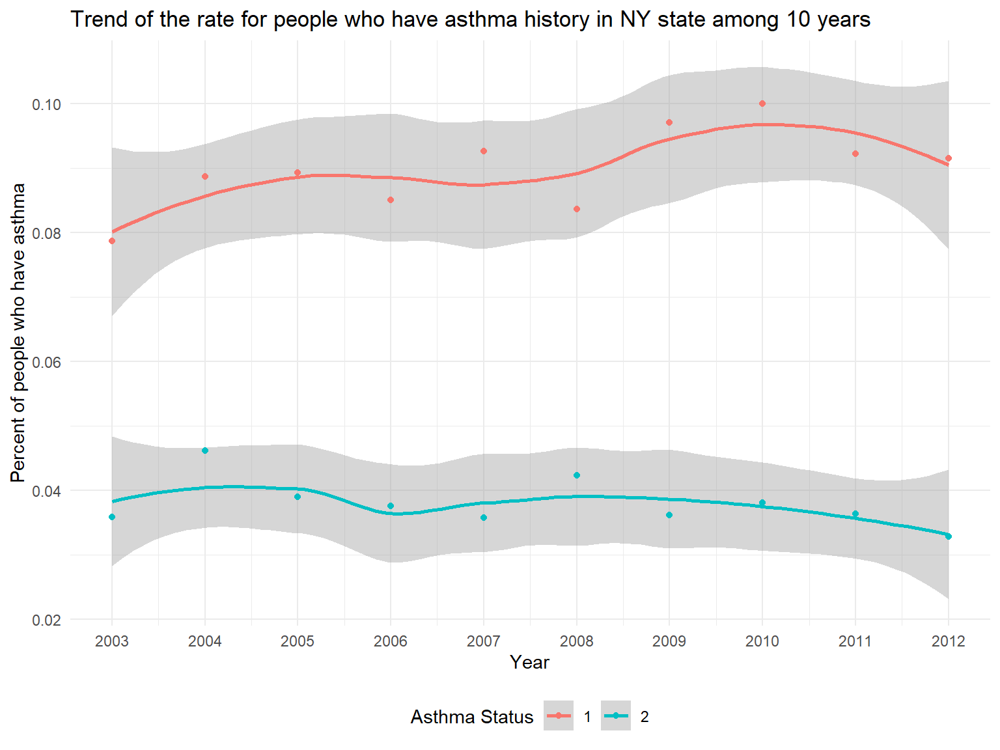
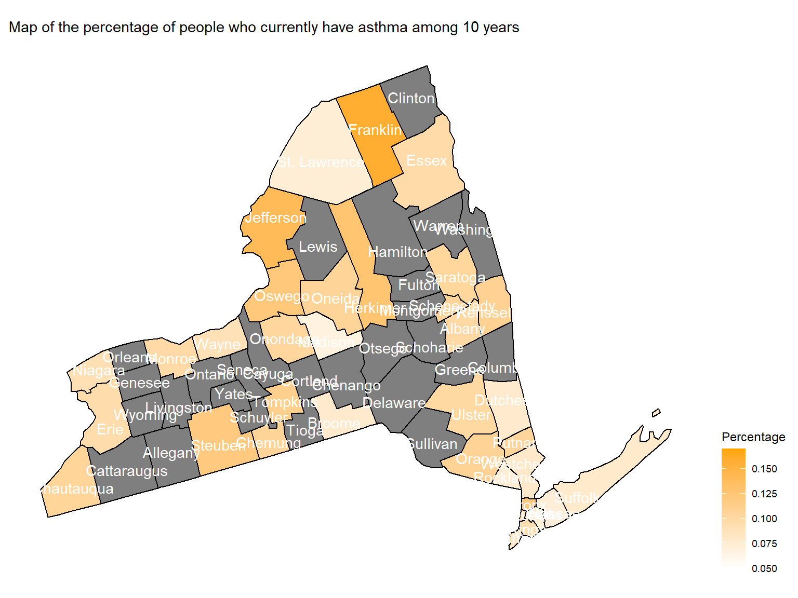
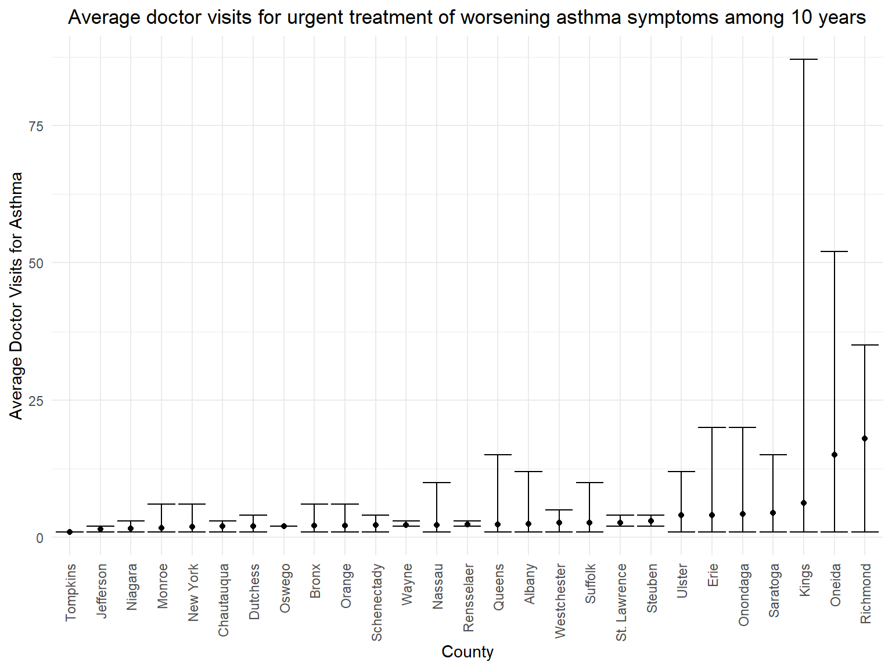
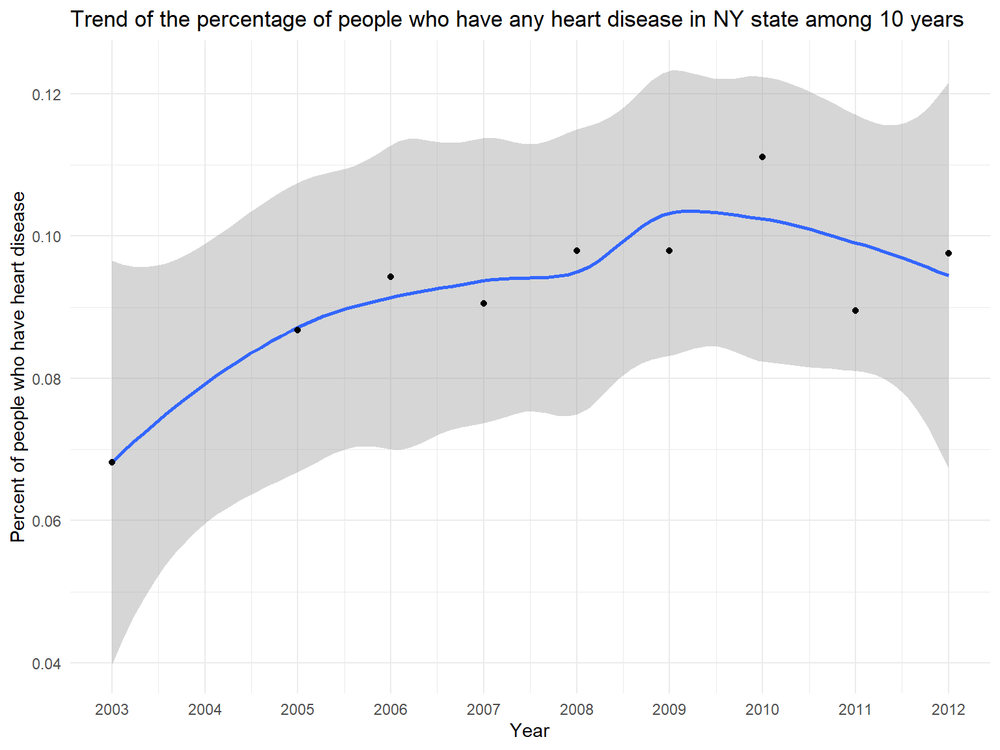
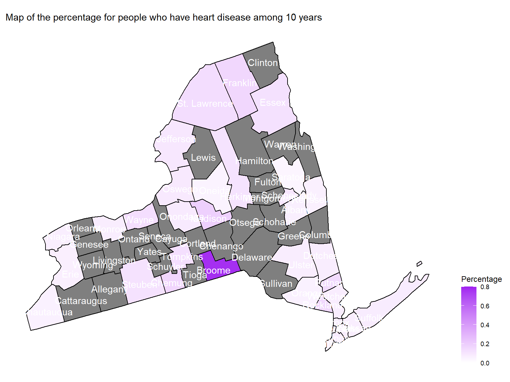

asthma_history_df =
brfss_air_df %>%
mutate(
fips = str_c(state_code.x,county_code)
) %>%
group_by(year) %>%
count(
year, asthma_status
) %>%
mutate(
percent = n/sum(n),
asthma_status = as.factor(asthma_status)
) %>%
drop_na(asthma_status)
asthma_history_graph =
asthma_history_df %>%
filter(asthma_status != "3") %>%
group_by(asthma_status) %>%
ggplot(aes(x = year, y = percent, group = asthma_status, color = asthma_status)) +
geom_smooth()+
geom_point()+
scale_fill_viridis(option = "viridis")+
labs(
title = "Trend of the rate for people who have asthma history in NY state among 10 years",
x = "Year",
y = "Percent of people who have asthma",
color = "Asthma Status"
) +
scale_x_continuous(breaks = 2003:2012 )
asthma_history_graph## `geom_smooth()` using method = 'loess' and formula 'y ~ x'
Asthma 1 stands for
People who currently have asthma while
Asthma 2 stands for
People who formerly have asthma.asthma_now_county_df =
brfss_air_df %>%
mutate(
fips = str_c(state_code.x,county_code)
) %>%
group_by(state_code.x, county_code,county,fips) %>%
count(
county,asthma_status
) %>%
mutate(
percent = n/sum(n)
) %>%
filter(asthma_status == "1") %>%
spread(asthma_status, percent)
asthma_now_county_plot_map =
plot_usmap(regions = "county", include = c("NY"), data = asthma_now_county_df, values = "1", labels = TRUE, label_color = "White") +
scale_fill_continuous(
low = "white", high = "Orange", name = "Percentage", label = scales::comma, limits = c(0.05,0.17)
) +
labs(
title = "Map of the percentage of people who currently have asthma among 10 years"
) +
theme(legend.position = "right")
asthma_now_county_plot_map
Franklin, Jefferson, Steuben and
Bronx are with highest percentage of people who currently
have asthma.asthma_visit_df =
brfss_air_df %>%
drop_na(asthma_visit) %>%
filter(asthma_visit != 0) %>%
group_by(state_code.x, county_code,county) %>%
summarize(
mean_asthma_visit = mean(asthma_visit),
max_asthma_visit = max(asthma_visit),
min_asthma_visit = min(asthma_visit)
) %>%
ungroup() %>%
arrange(mean_asthma_visit) %>%
mutate(
county = fct_reorder(county, mean_asthma_visit)
)## `summarise()` has grouped output by 'state_code.x', 'county_code'. You can
## override using the `.groups` argument.asthma_visit_graph =
asthma_visit_df %>%
ggplot(aes(x = county, y = mean_asthma_visit)) +
geom_point()+
geom_errorbar(mapping = aes(ymin = min_asthma_visit, ymax = max_asthma_visit )) +
labs( x = "County", y = "Average Doctor Visits for Asthma", title = "Average doctor visits for urgent treatment of worsening asthma symptoms among 10 years") +
theme(plot.title = element_text(hjust = 0.5)) +
theme(axis.text.x = element_text(angle = 90, vjust = 0.5, hjust = 1))
asthma_visit_graph
Richmond, Oneida and Kings are
with more than 5 average doctor visits for asthma.hd_history_df =
brfss_air_df %>%
mutate(
fips = str_c(state_code.x,county_code),
heart_disease = ifelse(coronary_heart_disease == "1" | heart_attack == "1" | stroke == "1", "1", "0")
) %>%
group_by(year) %>%
count(
year, heart_disease
) %>%
mutate(
percent = n/sum(n),
heart_disease = as.factor(heart_disease)
) %>%
drop_na(heart_disease)
hd_history_graph =
hd_history_df %>%
filter(heart_disease == "1") %>%
ggplot(aes(x = year, y = percent)) +
geom_smooth()+
geom_point()+
scale_fill_viridis(option = "viridis")+
labs(
title = "Trend of the percentage of people who have any heart disease in NY state among 10 years",
x = "Year",
y = "Percent of people who have heart disease"
) +
scale_x_continuous(breaks = 2003:2012 )
hd_history_graph## `geom_smooth()` using method = 'loess' and formula 'y ~ x'
hd_county_df =
brfss_air_df %>%
mutate(
fips = str_c(state_code.x,county_code),
heart_disease = ifelse(coronary_heart_disease == "1" | heart_attack == "1" | stroke == "1", "1", "0")
) %>%
group_by(state_code.x, county_code,county,fips) %>%
count(
year, heart_disease
) %>%
mutate(
percent = n/sum(n),
heart_disease = as.factor(heart_disease)
) %>%
drop_na(heart_disease)
hd_county_plot_map =
plot_usmap(regions = "county", include = c("NY"), data = hd_county_df, values = "percent", labels = TRUE, label_color = "white") +
scale_fill_continuous(
low = "white", high = "Purple", name = "Percentage", label = scales::comma, limits = c(0,0.8)
) +
labs(
title = "Map of the percentage for people who have heart disease among 10 years"
) +
theme(legend.position = "right")
hd_county_plot_map 
Broome are with highest percentage of people who have heart
disease among 10 years.